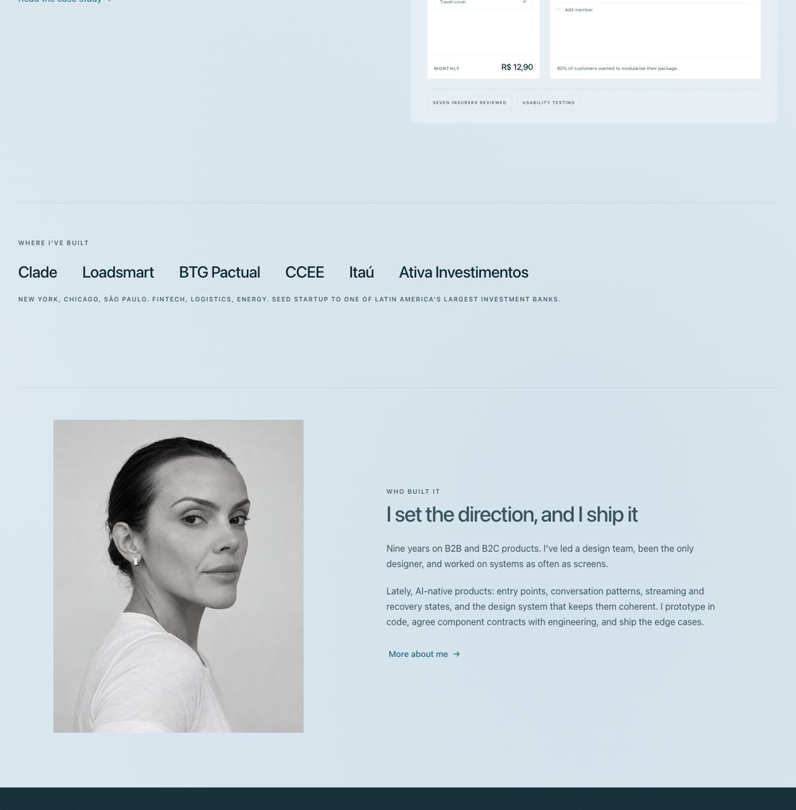
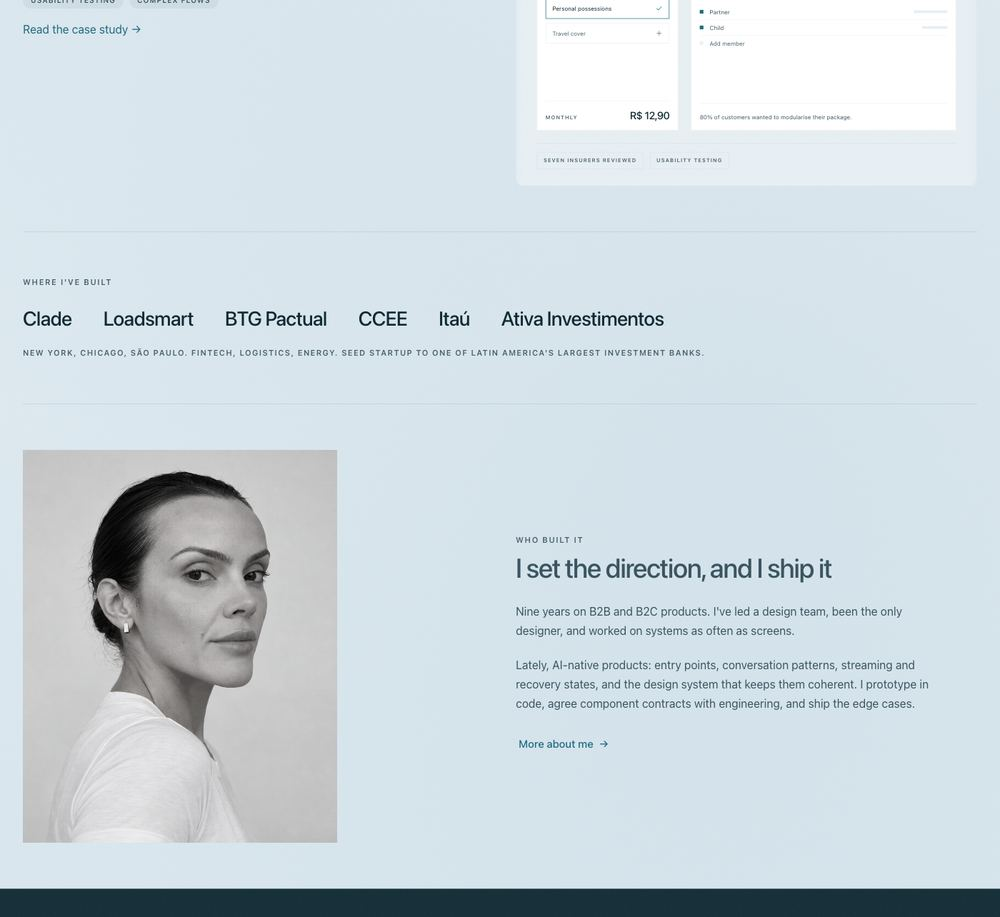
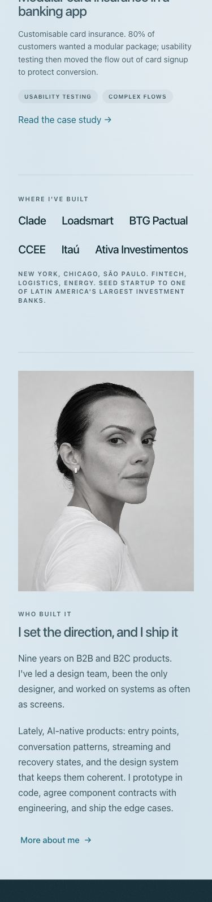
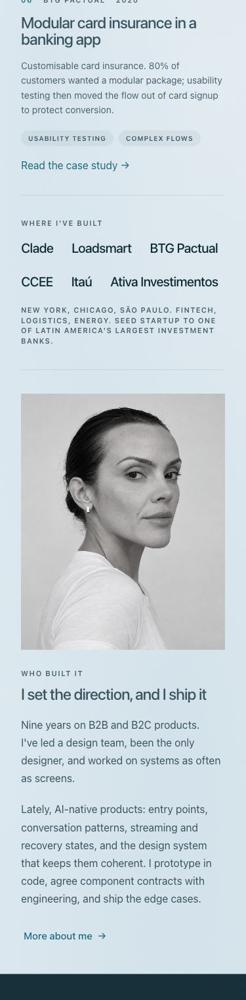
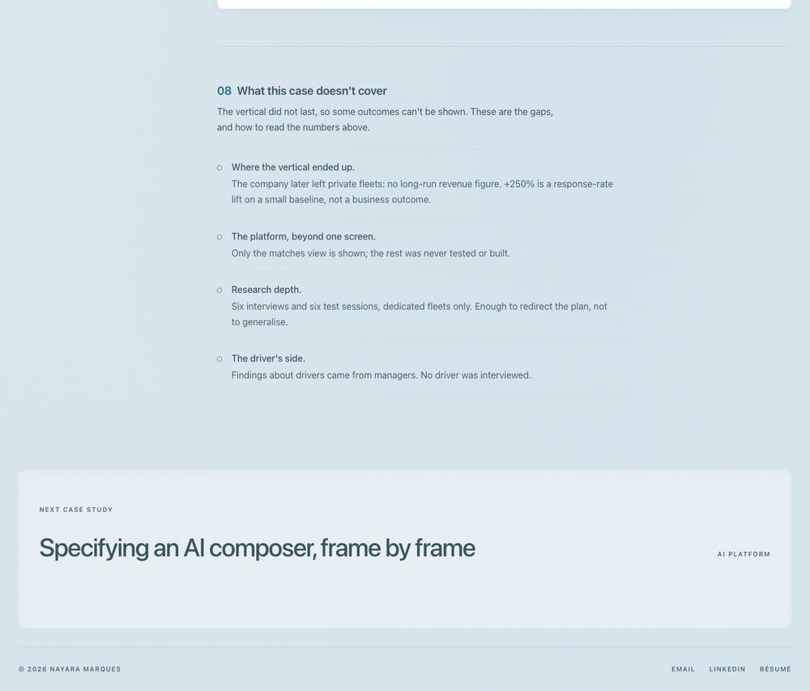
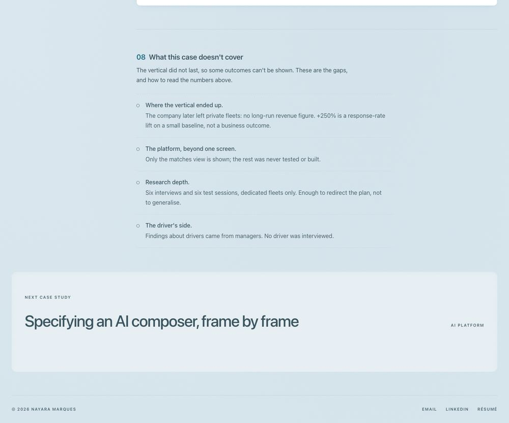
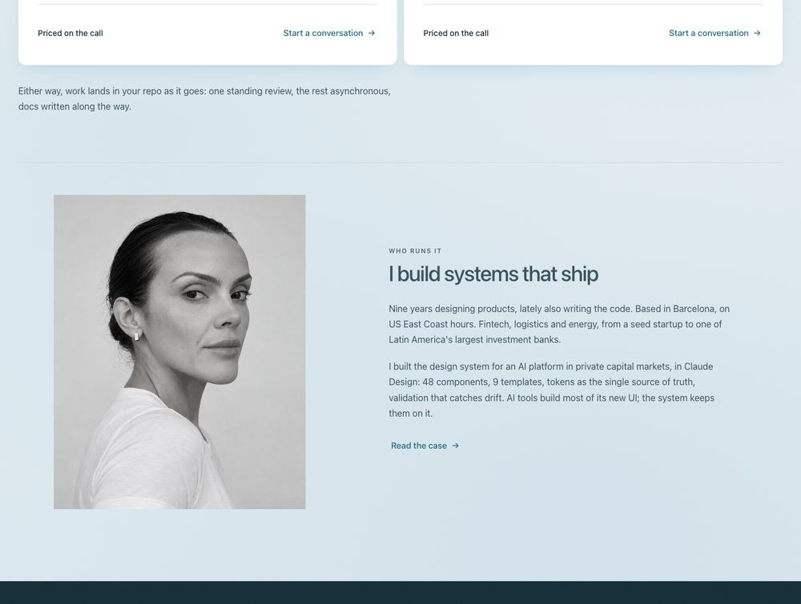
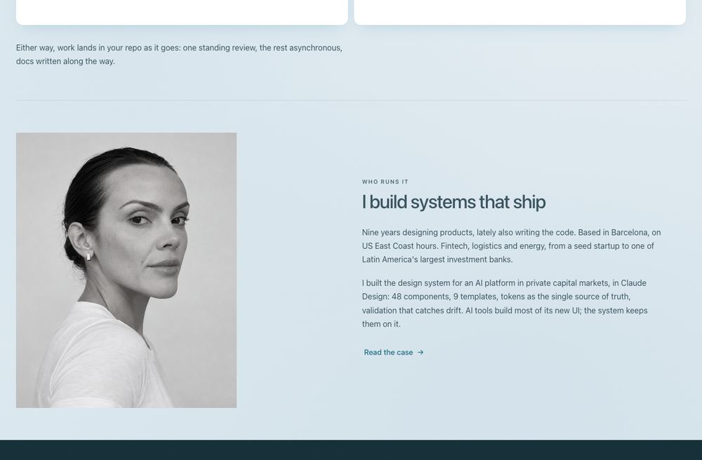
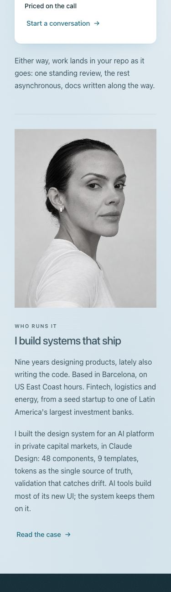

nayaramarques.com · theme-sky · round 4 · 2026-09-26
Round 4: one section padding, one column
Every top-level section now sits --section-y (36 to 64px) below the line that opens it and the same distance above the next line, on all 16 pages. Content starts on the page gutter; the home portrait no longer sits inside the column. No copy changed.
The rule
Token: --section-y, clamp(36px, 5vw, 64px). It was already in spacing.css and already the case sections' padding, so no new token. --section-pad is now unused; --section-gap stays only under a landing hero.
SEC-04 Every top-level section has the same space above and below its content: --section-y (36 to 64px), on every page. Above: from the line that opens the section (its divider, or the bottom of the case details glass) to the first content box. Below: from the last content box to the next line or edge (the next divider, the top of the ink band, the next-case well, the footer divider). Content box means the first and last visible box: text, an image, a surface, a bordered row; never a margin. So last children carry no trailing margin or padding, and a list's last row gives its bottom padding to the section. Built by .section (the divider on its first child, --section-y on both sides), by case rail sections (padding-top and padding-bottom --section-y) and by page sections with padding-block: var(--section-y). The larger --section-y-lg is allowed only under a hero and inside the ink band, never on a content section. These keep their own rules: heroes (HERO-01, HERO-02; the space under a hero is the hero's, a landing hero followed by .section keeps --section-gap, the home hero has no line under it); the ink band (its inner padding --section-y-lg or .ld-band__grid, no margin: the section above gives the space); the footer (its own equal padding, --space-2xl). The next-case well takes --section-y below it, and above it only after the ink band. (check_pages: within 2px, at 1400px and 375px, so equal and the same on every page)
SEC-05 One column grid. Content width: --page-max (1400) less --page-gutter (32) on each side, 1336px at most. Every section's content starts on the gutter. On a wide case page (861px and up) the body starts on column 2 of the case details' four-column grid (--case-gap between columns; case-index.js puts the index in column 1); on a phone, on the gutter. A block in two parts splits into equal halves with the case rows' gap (repeat(2, minmax(0, 1fr)), --space-fluid-xl: the home case rows and .ld-split), so the text of "Who built it" starts where the case illustrations start. Nothing is inset from the column or centred in it (the portrait starts on the gutter) unless it sits inside a surface (card, figure, well, glass, note), which insets by its own padding. (check_pages: the section's leftmost content box within 1px of the gutter, or of the case body column)
How it is measured: the lines are the section dividers, the ink band's edges, the case details' bottom edge, the next-case well and the footer divider. The content box is the first and last visible box between two lines (text, an image, a surface, a bordered row), never a margin. check_pages.js runs both checks at 1400px and 375px.
Before and after, per page
For each page, in px: how far the worst section sits from --section-y (64px at 1400px, 36px at 375px) across its sections, and the worst left-edge offset from the gutter. Largest fixes first. Red is off the rule and green is within it.
| Page | Sections | Off at 1400, before | after | Left edge off, before | after | Off at 375, before | after |
|---|---|---|---|---|---|---|---|
| index.html | 3 | 84 | 1 | 62 | 0 | 48 | 1 |
| design-system-audit.html | 7 | 62 | 0 | 62 | 0 | 28 | 0 |
| design-system-build.html | 3 | 62 | 0 | 62 | 0 | 28 | 0 |
| embedded-partner.html | 8 | 62 | 0 | 62 | 0 | 28 | 0 |
| advisors-platform.html | 9 | 64 | 1 | 0 | 0 | 32 | 1 |
| card-insurance.html | 9 | 64 | 1 | 0 | 0 | 32 | 1 |
| fleet-optimizer.html | 9 | 64 | 1 | 0 | 0 | 32 | 1 |
| project-engagement.html | 7 | 62 | 0 | 0 | 0 | 28 | 0 |
| ai-surfaces.html | 10 | 36 | 1 | 0 | 0 | 24 | 1 |
| composer-spec.html | 10 | 36 | 1 | 0 | 0 | 24 | 1 |
| design-system.html | 9 | 36 | 1 | 0 | 0 | 24 | 1 |
| about.html | 3 | 32 | 1 | 0 | 0 | 12 | 1 |
| work.html | 1 | 32 | 0 | 0 | 0 | 12 | 0 |
| contact.html | 2 | 1 | 1 | 0 | 0 | 1 | 1 |
| start-a-project.html | 2 | 1 | 1 | 0 | 0 | 1 | 1 |
| 404.html | 0 | 0 | 0 | 0 | 0 | 0 | 0 |
404 has only its hero, so there is no section to measure. Contact had no footer before this round (see "What moved"), so there was no line under its last section to measure against.
The largest fixes, at 1400px
Space above / below the content in px ("–" means the space belongs to the hero or to the section above), and the left edge's offset from the gutter.
| Page | Section | Before | After | Left |
|---|---|---|---|---|
| index | Where I've built | 63 / 148 | 63 / 64 | 0 → 0 |
| advisors-platform | 08 What this case doesn't cover | 63 / 128 | 63 / 64 | 0 → 0 |
| card-insurance | 08 What this case doesn't cover | 63 / 128 | 63 / 64 | 0 → 0 |
| fleet-optimizer | 08 What this case doesn't cover | 63 / 128 | 63 / 64 | 0 → 0 |
| design-system-audit | Who runs it | 56 / 126 | 64 / 64 | 62 → 0 |
| design-system-build | Who runs it | 56 / 126 | 64 / 64 | 62 → 0 |
| embedded-partner | Who you'd be working with | 56 / 126 | 64 / 64 | 62 → 0 |
| project-engagement | Questions | 56 / 126 | 64 / 64 | 0 → 0 |
| index | Who built it | 56 / 96 | 64 / 64 | 62 → 0 |
| advisors-platform | 01 The advisors platform | 100 / 64 | 64 / 64 | 0 → 0 |
| ai-surfaces | 01 Context & my role | 100 / 64 | 64 / 64 | 0 → 0 |
| card-insurance | 01 Context & my role | 100 / 64 | 64 / 64 | 0 → 0 |
| composer-spec | 01 Context & my role | 100 / 64 | 64 / 64 | 0 → 0 |
| design-system-audit | Why now | 56 / 100 | 64 / 64 | 0 → 0 |
| design-system | 01 Context | 100 / 64 | 64 / 64 | 0 → 0 |
| fleet-optimizer | 01 Context & my role | 100 / 64 | 64 / 64 | 0 → 0 |
The full tables are in _review/round-4-before.json and _review/round-4-after.json.
Screenshots









What moved
- Sections with a divider on the first child (
.section: the landing template and the home's "Who built it"). The divider now has--section-yon both sides. Before, it had--section-gapabove (48 to 88px) and--section-padbelow (32 to 56px), so every section's content sat high: 56 above and 84 below at 1400px. The same gap made "Where I've built" look bottom-heavy (64 above, 148 below). - The ink band takes no margin; the section above gives the space. The landing band used to have 64 to 128px above it. Its inner padding is unchanged.
- The next-case well takes
--section-ybelow it, and above it only after the ink band. It had 20 to 32px on both sides. - Case pages: the case details glass has no bottom margin, so section 01 starts
--section-yunder it (it was 100px at 1400px). The last rail section, and Card insurance's section 07, end on--section-y(they used--section-y-lg). Composer spec's problem figure lost a trailing 20px margin. - About: the three sections go from
--section-y-lgto--section-y(96 to 64px at 1400px). The last principle row gives its bottom padding to the section. - Home and Work: the case list ends
--section-yabove the next line, because the last row's padding moved to the section. On Work, two extra rules are gone: the first row's top rule (a second line 64px under the hero's) and the last row's bottom rule (a line 64px above the footer's). On both pages, the first row no longer draws a rule when the scroll reveal plays. On the home that line appeared under the hero, which LAY-05a rules out. - "Who built it" and "Who runs it" (
.ld-split): two equal halves with the case rows' gap. The portrait starts on the column edge: it was centred in its column, 62px inside the gutter at 1400px. On the home, the text column now starts exactly where the case illustrations start (722px; it was at 679px). - Audit, "My own site, measured": the card had no padding, so its text touched the card's edges, and its last paragraph's margin added 16px under it. It now has the landing card padding (CRD-01).
- Contact: after the page, the file held a stale second copy of it, and the first copy was cut off inside the résumé picker, so the footer never rendered. I removed the stale copy and the footer is back. The same fault is on
main, the live site, today.
What I left, and why
- Heroes. The space under a hero belongs to the hero (HERO-01, HERO-02), so it still varies:
--section-y-lgplus a line on About and Work, the glass on case pages,--section-gapon the landings, and the first-screen hero on the home. Making it one value is a separate decision (question 1). - The ink band's own padding has two values:
--section-y-lg(home, About, case pages) and.ld-band__grid'sclamp(56px, 8vw, 104px)(services). See question 2. - The footer keeps its own equal padding (
--space-2xl, 32px), because it is a bar, not a section. - About's hero portrait is still centred in its column. It sits in a hero, which SEC-05 does not cover. Aligning it to the end of its column is a one-line change if you want it.
- Fleet optimizer, Advisors platform and Card insurance have no ink band, and the last two still use the older hand-built next-case block (LAY-07). A band needs your words (question 3).
- Spacing inside sections (sub-sections, rows, cards) is unchanged; LAY-09 and the content patterns cover it.
Open questions
1. Each template has a different space under the hero. Should it be one value?
Yes. Use --section-y-lg under every hero except the home's (About, Work, Contact and Start a project already use it). Then retire --section-pad and --section-gap in spacing.css and run ds-sync.
2. The ink band has two inner paddings: --section-y-lg, and 56 to 104px on the services pages.
Use --section-y-lg everywhere, so the band is the same object on every page.
3. Fleet optimizer, Advisors platform and Card insurance end without the ink band, and two of them use the old next-case block.
Bring them to LAY-07: the ink band (you write or pick its two lines) and NextCase in the well. SEC-04 already holds on them in the meantime.
4. At 1400px the next-case well now has 64px above and below it (it had 32px), so it reads as a section of its own.
Keep it. The rule is one value for every top-level block.
5. "Who runs it" on the services pages changed with the home: equal halves, with the text column 43px further right at 1400px and the portrait the same size. That leaves about 250px between the portrait and the text.
Keep the grid. If the gap feels empty, let the portrait fill its half (drop the 440px cap), rather than going back to uneven columns.
Checks
python3 harness/check.py: source 0 failures and 8 warnings (copy and dashed-frame items that were there before this round); rendered pages pass on all 16 pages at 1400px and 375px. PASS.check_pages.jswith reduced motion on: pass on all 16 pages at both widths.- I broke the home on purpose once:
--section-y-lgunder "Who built it" and the portrait centred again. SEC-04 reported "content 96px below; --section-y is 64px" (48 against 36 at 375px). SEC-05 reported "content starts at 135px, the gutter is 32px" on the home and on Design system build. Then I restored both.